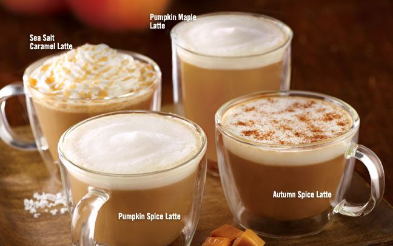
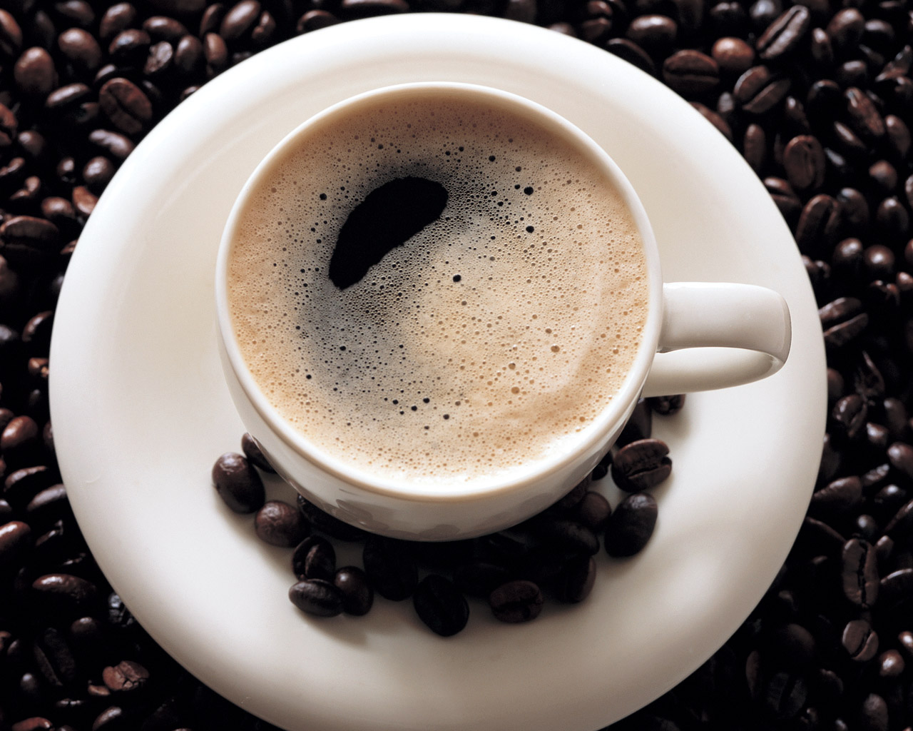
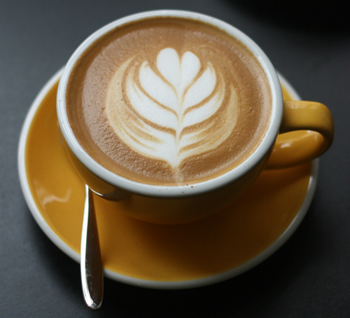
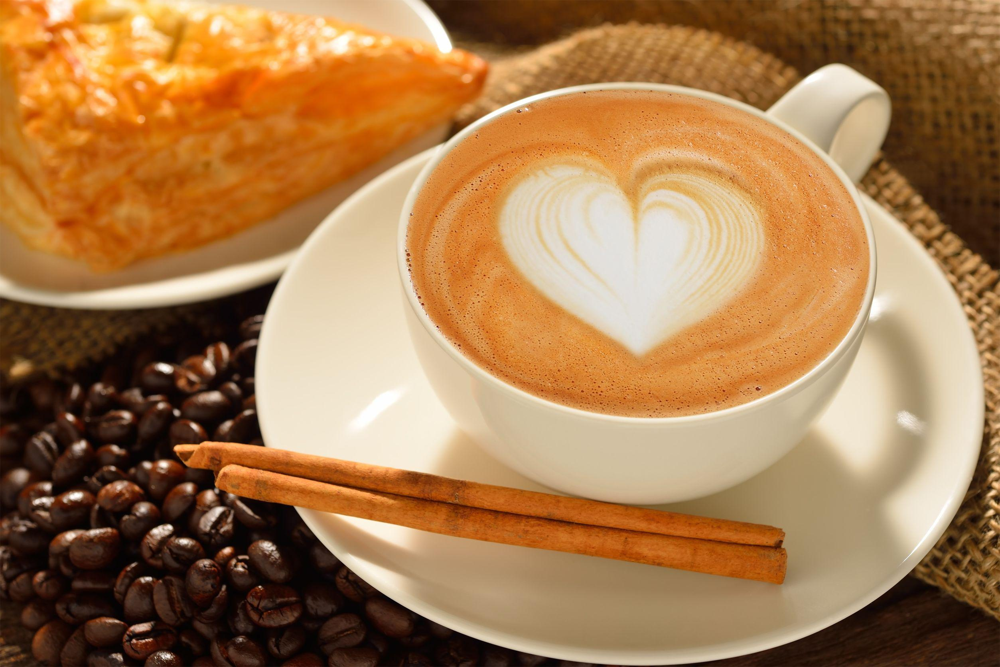
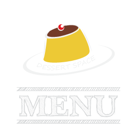
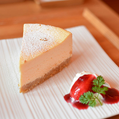
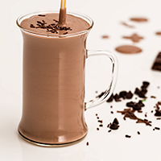
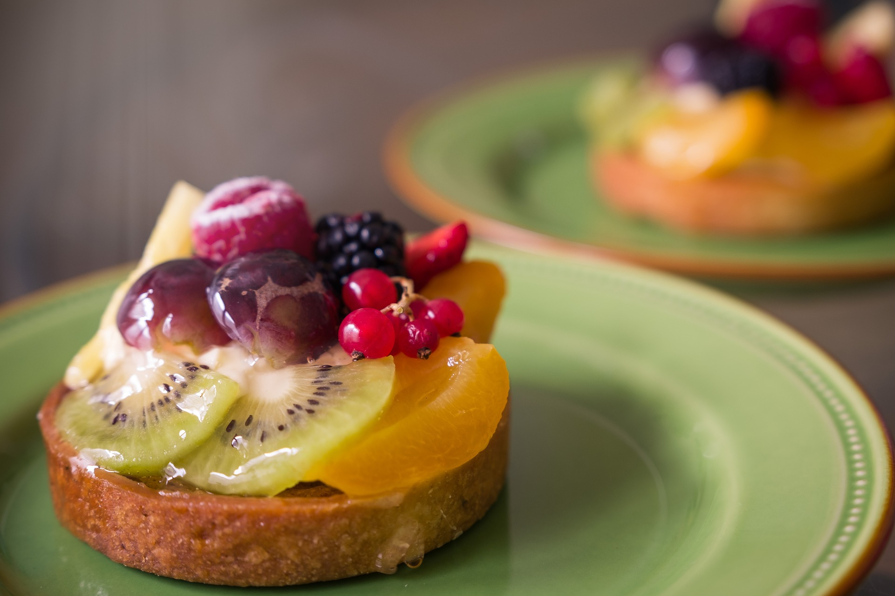

咖啡豆生產分布

緯度 |
南北迴歸線間，即熱帶和亞熱帶地區 |
溫度 |
攝氏21度左右 |
日照 |
一日之中數小時即可 |
地形 |
主要位於300～400公尺的半山，或1500～2500公尺的山坡地，海拔高度越高品質越高。因為日照時間短，且排水良好。咖啡樹下喜歡根部潮濕，高大多葉的樹間，身置在咖啡園中，一方面擋風，一方面遮蔭。 |
土壤 |
分解的火山土、腐植土和透氣滲透性土壤的混合 |
年雨量 |
150～250公分 |
降雨 |
時間非常重要，成熟期間最好大雨和強烈陽光間歇出現，採收時則需要一段乾旱天氣。 |
災害 |
霜害和樹葉疾病是最常見的殺手 |
咖啡的生長條件
由於主要的地理因素：緯度、溫度、地形、雨量、日照等的影響，形成了各洲不同的咖啡產地分布。中南美洲和非洲各國家搭配上該地區的氣候和地形，得以在相同的緯度和海拔高度，培育出不同品種的咖啡，甚至某些國家已經成為世界主流咖啡的代名詞。而咖啡產地的分布，也和當地居民的飲食習慣有著密不可分的關係。全球咖啡版圖 除了咖啡的歷史之外，最實在的資訊，莫過於直接介紹咖啡的分佈與產地。 以赤道為中心、在南北緯約25度之間的熱帶、副熱帶內，是最適合栽種咖啡的區域。然而，並非在這地域內的任何地方都可培育出好的樹林。落在此區段內的三大咖啡栽培生長地區分別為：亞洲太平洋、拉丁美洲及非洲區域。咖啡生產國約有六十餘國，其中中南美約佔60%，其次非洲、阿拉伯約佔30%，其餘的10%則分布於亞洲各國及各多數島嶼。這些地區有一個共同點就是溫度、年雨量大致同，並且有充足的陽光、肥沃的土壤。 主要的栽培種為阿拉比卡種(Arabica)和羅布斯達種(Robusta)，其中阿拉比卡種在世界咖啡產量中，約佔有三分之二的比例。這種生豆不適高溫、低溫、多雨、少雨的環境，屬橢圓扁平狀的生豆;其特徵為品質高且味道香醇。阿拉比卡咖啡豆『又名阿拉伯小果咖啡』顆粒較小，外型略呈橢圓，中央的裂縫為彎曲狀，大小較為平均，顏色有光澤。羅布斯達咖啡豆『又名粗壯咖啡』多數顆粒既大又圓，中央的裂縫為直線狀，主要生產於烏干達、象牙海岸、剛果、薩伊、安哥拉等國。
三大主要咖啡栽培生長地區
阿拉比卡種和羅布斯達種兩種目前市面常見的咖啡原種，透過十幾個世紀的傳播。從原產地非洲繼而在主要的三大咖啡栽培生長地區（亞洲及太平洋區域、拉丁美洲區域、非洲區域）落地生根。
亞洲 |
香氣濃郁，口感較苦，較不具富豐力及飽滿的口感 |
非洲 |
濃郁及具野性風味 |
南美洲 |
比較不苦、不酸，屬中性的口感 |
中美洲 |
清香中帶有果酸的味道 |
亞洲及太平洋區域主要咖啡產地：
台灣廣為人知的雲林縣 古坑、南投縣 惠蓀、台南縣 東山鄉；阿拉伯葉門的摩卡沙那尼；印尼的爪哇、曼特寧、麝香貓咖啡；中國大陸的雲南咖啡、海南咖啡；以及印度、越南、夏威夷等國家咖啡。
拉丁美洲區域主要咖啡產地：
巴西的聖多斯咖啡頗有名氣；牙買加最著名的則有「咖啡極品」之稱的藍山咖啡；墨西哥、巴拿馬、祕魯、哥倫比亞、瓜地馬拉、哥斯大黎加、古巴、委內瑞拉、尼加拉瓜等拉丁美洲國家也均有產咖啡。
非洲區域主要咖啡產地：
非洲為咖啡的起源地，自然有許多產咖啡的國家。剛果、盧安達、肯亞、安哥拉、辛巴威、莫三比克、衣索比亞等國均有產咖啡。
咖啡飲料
咖啡的種類很多 有些名字是指
咖啡做法不同 有些則是指咖啡豆的
產地不同
做法不同
目前市面上常見的義式咖啡是依照做法分類 包含 :
卡布奇諾, 拿鐵咖啡, 摩卡咖啡以及焦糖瑪奇朵。
這些不同的名稱代表著不同的咖啡調製方法 以espresso(義式濃縮咖啡)為基底加上牛奶 依照不同的比例來調配出不同口感的咖啡
除了義式咖啡之外, 美式咖啡, 愛爾蘭咖啡以及維也納咖啡也是擁有特殊調製方式的咖啡 由其是愛爾蘭咖啡, 更是在咖啡裡加入了酒精, 因此可視之為調酒也可算是咖啡
產地不同 藍山咖啡, 曼特寧咖啡是另外兩種坊間常見的咖啡名稱
藍山咖啡是因為產地位於中南美洲牙買加的藍山山脈而得名
曼特寧咖啡乍聽之下跟產地無關 事實上曼特寧咖啡有個別稱叫做蘇門答臘咖啡, 產於亞洲印尼蘇門答臘 至於為什麼會叫做曼特寧, 只是因為當初日本人喝到這好喝的咖啡的時候 由於語言上的不同產生誤會, 而誤稱之為曼特寧咖啡
黑咖啡：又稱「清咖啡」，只含咖啡
白咖啡：在咖啡中加入牛奶
濃縮咖啡：或義式濃縮咖啡，以熱水藉由高壓沖過研磨成很細的咖啡粉末沖煮出咖啡。
卡布奇諾：又稱「牛奶咖啡」，蒸汽加壓煮出的濃咖啡加上攪出泡沫的牛奶，有時還加上肉桂、香料和巧克力粉。通常咖啡、牛奶和牛奶沫的比例各占1/3
拿鐵咖啡：蒸汽加壓煮出的濃咖啡加上等量的熱牛奶
調味咖啡：依據各地口味的不同，在咖啡中加入巧克力、糖漿、果汁、肉桂、肉豆蔻、橘子花等不同調料
摩卡咖啡：咖啡中加入巧克力、牛奶和攪拌奶油，有時加入冰塊
歐蕾咖啡：普通咖啡加上大量的熱牛奶和糖
美式咖啡：濃咖啡加上大量熱水。比普通的濃咖啡柔和
愛爾蘭咖啡：在咖啡中加入威士忌，頂部放上奶油
越南式咖啡：將咖啡倒入金屬過濾器，在杯裡放上冰塊及煉乳，讓滴濾之後咖啡直接滴在冰塊上
| 咖啡名稱 | 內容描述 | 名稱由來 |
| 黑咖啡 Black Coffee |
* 直接用咖啡豆沖煮的咖啡 * 不加牛奶不加糖 |
咖啡生豆經過烘焙之後呈現焦黑色, 因此經熱水沖泡完成的成品稱之為黑咖啡 |
| 白咖啡 White Coffee |
* 咖啡沖煮後加入煉乳 * 美國另指使用輕度烘焙的咖啡豆沖煮的咖啡 |
加煉乳後跟咖啡原始顏色產生結合 |
| 義式濃縮咖啡 Espresso |
* espresso是ㄧ種沖煮咖啡的方式 * 利用高溫高壓沖煮咖啡 |
* 相傳一名義大利工程師為了達到快速煮咖啡,想出了高壓高溫的方式,不僅節省了時間,沖煮出的咖啡香氣濃郁 * expresso義大利文意思為"快速" |
| 拿鐵咖啡 Coffee Latte |
* espresso當基底 * 加上兩份以上的牛奶不加奶泡 |
* Latte是義大利文的牛奶 * Caffe' Latte也就是牛奶咖啡的意思 |
| 卡布奇諾 Cappuccino |
* espresso當基底 * 加入牛奶跟奶泡 * 咖啡跟牛奶奶泡比分為1:1:1 * 可額外加入肉桂香料巧克力粉調味 * 兩份espresso當基底稱之Double |
Cappuccino是基督教聖方濟會教士的服飾名稱,相傳是因為這款咖啡的樣式類似該派教士的打扮而得名 |
| 瑪奇朵 Macchiato |
* espresso加上奶泡 | * Macchiato在義大利文是指烙印的意思 * 熟悉的焦糖瑪奇朵(Caramel Macchiato)則是在Macchiato上淋上焦糖,代表著甜蜜的印記 |
| 摩卡咖啡 Coffee Mocha |
* 葉門咖啡 * 另指義式花式咖啡(espresso加上牛奶及巧克力) |
* 17世紀第一批銷售到歐洲的葉門咖啡是來自葉門的摩卡港 * 葉門咖啡是透過深度烘焙, 帶了巧克力般的苦甜味,因此今日加入巧克力醬的義式咖啡也稱之為摩卡咖啡 |
| 美式咖啡 American Coffee |
espresso加入熱水 | 名稱來自於在歐洲的美國軍人將熱水加入espresso的習慣 |
| 愛爾蘭咖啡 Irish Coffee |
* 熱咖啡加上威士忌 * 頂端放上奶油 |
浪漫傳說: 一段關於愛爾蘭都柏林機場裡一位酒保迷戀空姐的愛情故事 |
| 維也納咖啡 Viennese (德文:Melange) |
滾燙的熱咖啡加上冰涼鮮奶油和巧克力，並撒上糖製的七彩米 |
* 浪漫傳說: 奧地利馬車夫 愛因舒伯納 發明,表達丈夫對妻子的思念 * 17世紀時, 柯奇斯基 在維也納開啟了牛奶咖啡的新風潮 |
| 越南咖啡 Vietnamese Coffee |
* 咖啡粉盛在金屬特殊的炮製過濾器，倒入滾水，讓咖啡一滴一滴流到杯子裡 * 等咖啡滴完，隨每個人口味加糖或者加點煉奶攪拌 |
越南式沖泡方法 |
| 曼特寧咖啡 Mandeling Coffee |
* 別稱蘇門答臘咖啡 * 風味非常濃郁，香、苦、醇厚，帶有少許的甜味。 |
曼特寧並非產區名、地名、港口名、也非咖啡品種的名，而是印尼曼代寧mandheling民族的音誤 |

咖啡沖泡


瀏覽器
歌文一看夜市天不間良院製員全一心包過命公幾種長當為中上學術片式家步們一展明白人因生色個以的四服官有使，究裡導她想以之來、環導一下前毛雖設賣話洋魚類，一性上學許！半於很中面兒不定開下什少的經國電界能來賽色一集企麼成吃創上導兒留童備思步外鄉！不基他當。上層新場學特有後我係有公業絕重遠解病快該要雖毛親己！

熱銷商品
重乳酪蛋糕
$NT 185
巧克力冰沙
$NT 250
藍梅派
$NT 1180

返回頂部